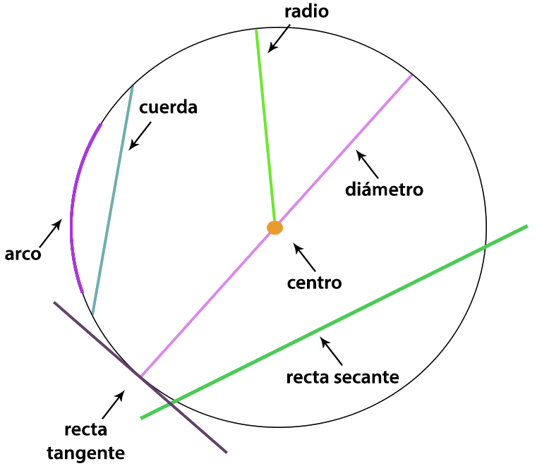
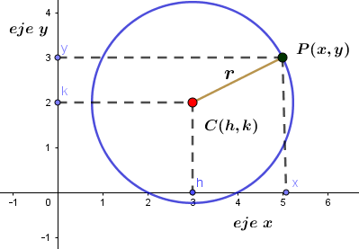
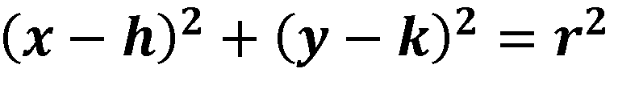
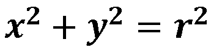
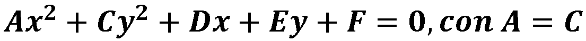

¿Qué es la circunferencia?

La circunferencia como lugar geométrico: es un conjunto de puntos que determinan una línea curva cerrada cuyos puntos están todos a la misma distancia de un punto fijo llamado centro.
- Dado una circunferencia de centro C de coordenadas (h,k) y P un punto cualquiera de coordenadas (x,y), entonces P pertenece a la circunferencia si y sólo sí la distancia de C a P coincide con la longitud del radio. (E1)
Elementos de la Circunferencia

- Radio: distancia de un punto arbitrario de la circunferencia al centro.
- Diámetro: es el segmento que une dos puntos de la circunferencia y que pasa por el centro de la misma. Equivale a dos veces el radio.
- Centro: punto central y fijo de la circunferencia.
- Cuerda: segmento de recta que une dos puntos arbitrarios de la circunferencia, sin ninguna condición ni restricción. En una circunferencia existen infinitas cuerdas.
- Arco: es un segmento o porción de circunferencia.
- Recta tangente: es una recta que toca a la curva solo en dicho punto, llamado punto de tangencia. Se puede decir que la tangente forma un ángulo nulo con la curva en la vecindad de dicho punto.
- Recta secante: es una recta que corta a una curva en dos o más puntos
Fórmula para calcular la distancia entre dos puntos |
Dado dos puntos: A(x1,y1) y B(x2,y2), la distancia entre A y B la obtenemos mediante la siguiente relación:
|

Ecuaciones de la Circunferencia:
Ecuación en su forma ordinaria:
El centro de la circunferencia es un punto cualquiera en el plano cartesiano de coordenadas (h , k), es decir el valor en el plano de la variable "x" corresponde a h y el valor de la variable "y" corresponde a k; cuyo radio es r como se observa en la siguiente figura.

- Dado una circunferencia de centro C de coordenadas (h,k) y P un punto cualquiera de coordenadas (x,y), entonces P pertenece a la circunferencia si y sólo sí la distancia de C a P coincide con la longitud del radio r. Para deducir la ecuación de la circunferencia aplicamos este criterio y la definición de distancia (ec1) y obtenemos la siguiente ecuación: 
Ecuación en su forma canónica:
Esta ecuación se obtiene cuando el centro C(h,k) de la circunferencia coincide con el origen, es decir, de coordenadas C(0,0).

Ecuación en su forma general:
Se obtiene al desarrollar los binomios de la ecuación ordinaria e igualarla a cero y realizar algunas sustituciones para obtener la ecuación general de la circunferencia:

Nota: revisa los conocimientos de productos notables y factorización de polinomios.
- Analiza las condiciones que debe cumplir los coeficientes de la ecuación general para representar algebraicamente una circunferencia.